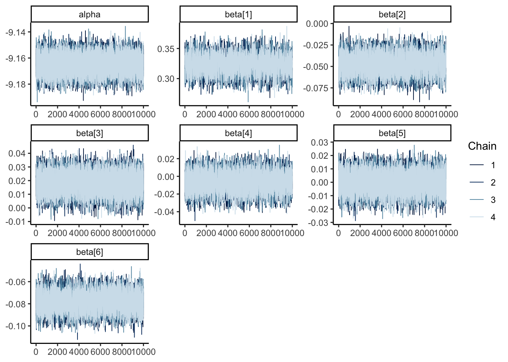
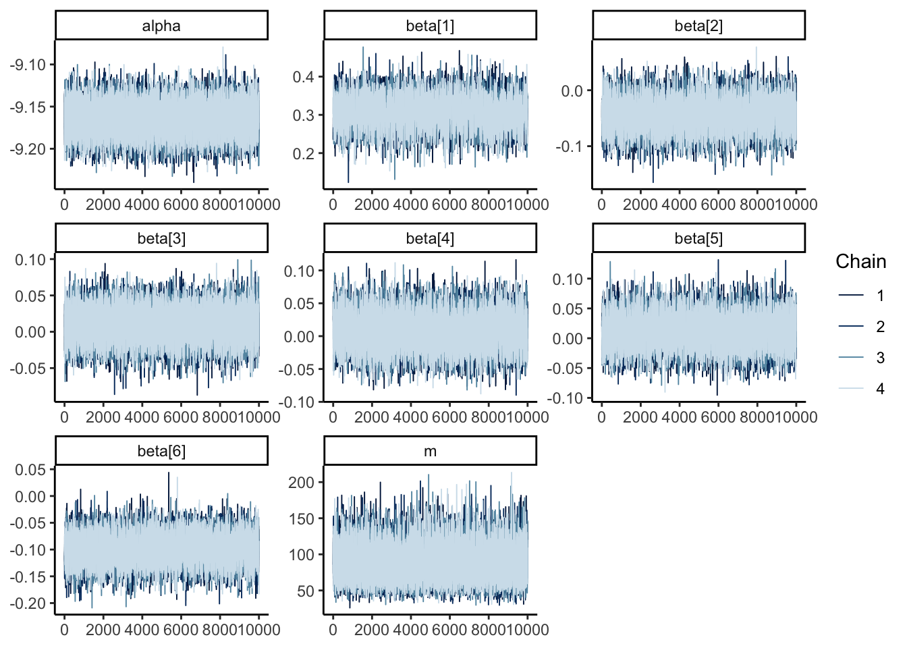
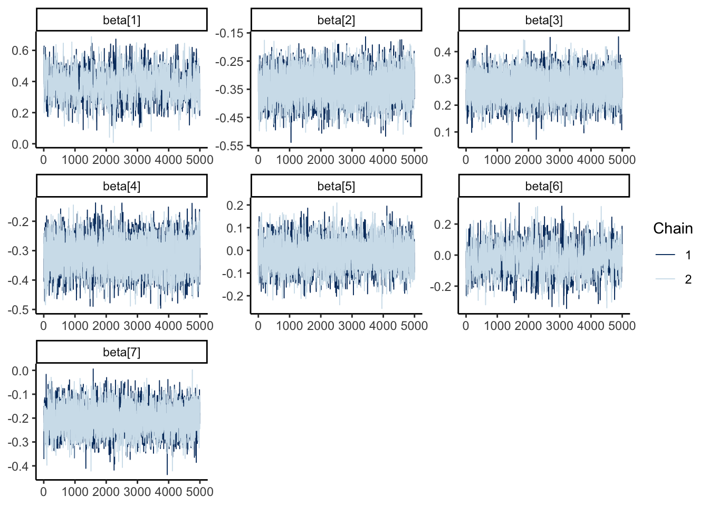
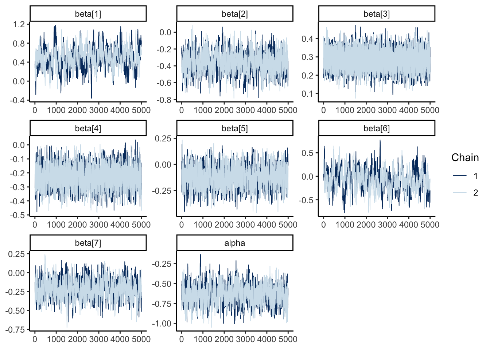

```{r setup}
#| output: hide
library(tidyverse)
library(ggplot2)
library(rjags)
library(posterior)
library(bayesplot)
library(gt)
theme_set(theme_classic())
```4
Download the US gun control data from the book’s website. For state \(i\), let \(Y_i\) be the number of homicides and \(N_i\) be the population.
- Fit the model \(Y_i \vert \beta \sim \mathrm{Poisson}(N_i\lambda_i)\) where \(\log(\lambda_i) = \mathbf X_i\beta\). Use uninformative priors and \(p = 7\) covariates in \(\mathbf X_i\): the intercept, the five confounders \(\mathbf Z_i\), and the total number of gun laws in state \(i\). Provide justification that the MCMC sampler has converged and sufficiently explored the posterior distribution and summarize the posterior of \(\beta\)
Solution:
load(url("https://www4.stat.ncsu.edu/~bjreich/BSMdata/guns.RData",))
GunLaws <- rowSums(X)
my_X <- cbind(Z, GunLaws) |> scale()
model_string <- textConnection("model{
# Likelihood
for (i in 1:N_obs) {
Y[i] ~ dpois(N[i] * lambda[i])
log(lambda[i]) <- alpha + (X[i, ] %*% beta)
}
for (j in 1:6) {
beta[j] ~ dnorm(0, 0.1)
}
alpha ~ dnorm(0, 0.1)
}")
data = list(
X = my_X,
N = N,
Y = Y,
N_obs = length(Y)
)
model <- jags.model(
model_string,
data = data,
n.chains = 4,
quiet = TRUE
)
update(model, 10000, progress.bar = "none")
samples <- coda.samples(
model,
variable.names = c("alpha", "beta"),
n.iter = 10000,
progress.bar = "none"
)
posterior_jags <- samples |>
as_draws_df()The table below shows us that the \(\hat R\) and ESS of our variables is sufficiently low and the trace plot shows no signs of a lack of convergence. The table below also shows a summary of the posterior distrubution of each model parameter.
posterior_jags |>
summarise_draws() |>
gt() |>
fmt_number(
decimals = 2
) | variable | mean | median | sd | mad | q5 | q95 | rhat | ess_bulk | ess_tail |
|---|---|---|---|---|---|---|---|---|---|
| alpha | −9.16 | −9.16 | 0.01 | 0.01 | −9.18 | −9.15 | 1.00 | 13,414.48 | 18,958.25 |
| beta[1] | 0.32 | 0.32 | 0.01 | 0.01 | 0.30 | 0.35 | 1.00 | 3,778.12 | 7,256.56 |
| beta[2] | −0.05 | −0.05 | 0.01 | 0.01 | −0.06 | −0.03 | 1.00 | 5,682.28 | 10,585.90 |
| beta[3] | 0.02 | 0.02 | 0.01 | 0.01 | 0.01 | 0.03 | 1.00 | 12,427.16 | 16,946.11 |
| beta[4] | −0.01 | −0.01 | 0.01 | 0.01 | −0.02 | 0.01 | 1.00 | 6,439.86 | 11,669.08 |
| beta[5] | 0.00 | 0.00 | 0.01 | 0.01 | −0.01 | 0.01 | 1.00 | 8,774.36 | 14,705.81 |
| beta[6] | −0.08 | −0.08 | 0.01 | 0.01 | −0.09 | −0.06 | 1.00 | 6,892.82 | 12,702.51 |
mcmc_trace(
posterior_jags
)
- Fit a Negative binomial regression model and compare with the results from Poisson regression.
Solution:
model_string <- textConnection("model{
# Likelihood
for (i in 1:N_obs) {
Y[i] ~ dnegbin(q[i], m)
q[i] <- m / (m + N[i] * lambda[i])
log(lambda[i]) <- alpha + inprod(X[i, ], beta[])
}
for (j in 1:6) {
beta[j] ~ dnorm(0, 0.0001)
}
alpha ~ dnorm(0, 0.0001)
m ~ dgamma(0.1, 0.1)
}")
data = list(
X = my_X,
N = N,
Y = Y,
N_obs = length(Y)
)
model <- jags.model(
model_string,
data = data,
n.chains = 4,
quiet = TRUE
)
update(model, 10000, progress.bar = "none")
samples <- coda.samples(
model,
variable.names = c("alpha", "beta", "m"),
n.iter = 10000,
progress.bar = "none"
)
posterior_jags <- samples |>
as_draws_df()The table below shows us that the \(\hat R\) and ESS of our variables is sufficiently low and the trace plot shows no signs of a lack of convergence. The table below also shows a summary of the posterior distrubution of each model parameter.
posterior_jags |>
summarise_draws() |>
mutate(
plot_col = 1
) |>
gt() |>
fmt_number(
decimals = 2
) | variable | mean | median | sd | mad | q5 | q95 | rhat | ess_bulk | ess_tail | plot_col |
|---|---|---|---|---|---|---|---|---|---|---|
| alpha | −9.16 | −9.17 | 0.02 | 0.02 | −9.19 | −9.14 | 1.00 | 24,306.41 | 23,025.54 | 1.00 |
| beta[1] | 0.31 | 0.31 | 0.04 | 0.04 | 0.24 | 0.37 | 1.00 | 4,224.12 | 7,457.87 | 1.00 |
| beta[2] | −0.04 | −0.04 | 0.03 | 0.03 | −0.09 | 0.00 | 1.00 | 7,980.91 | 13,916.39 | 1.00 |
| beta[3] | 0.01 | 0.01 | 0.02 | 0.02 | −0.03 | 0.04 | 1.00 | 13,979.67 | 19,509.81 | 1.00 |
| beta[4] | 0.01 | 0.01 | 0.03 | 0.03 | −0.03 | 0.05 | 1.00 | 7,132.44 | 13,483.43 | 1.00 |
| beta[5] | 0.01 | 0.01 | 0.03 | 0.03 | −0.03 | 0.05 | 1.00 | 9,036.48 | 14,989.34 | 1.00 |
| beta[6] | −0.10 | −0.10 | 0.03 | 0.03 | −0.14 | −0.06 | 1.00 | 7,125.51 | 11,216.85 | 1.00 |
| m | 88.50 | 86.20 | 22.80 | 21.92 | 55.31 | 129.51 | 1.00 | 15,875.78 | 17,765.77 | 1.00 |
mcmc_trace(
posterior_jags
)
- For the Poisson model in (a), compute the posterior predictive distribution for each state with the number of gun laws set to zero. Repeat this with the number of gun laws set to 25 (the maximum number). According to these calculations, how would the number of deaths nationwide be affected by these policy changes? Do you trust these projections?
Solution:
Here it is important to keep in mind that if we scale the original X predictors, we need to apply the same scaling to the new values we use for 0 or 25 gun laws, i.e.
\[ 0_{\mathrm{scaled}} = \frac{0 - \mathrm{mean}(X)}{ \mathrm{SD}(X)} \]
and
\[ 25_{\mathrm{scaled}} = \frac{25 - \mathrm{mean}(X)}{ \mathrm{SD}(X)} \]
where X is a vector containing the number of gun laws in each state.
mean_gunlaws <- mean(GunLaws)
sd_gunlaws <- sd(GunLaws)
scaled_zero <- (0 - mean_gunlaws) / sd_gunlaws
scaled_25 <- (25 - mean_gunlaws) / sd_gunlaws
data = list(
X = my_X,
scaled_zero = scaled_zero,
scaled_25 = scaled_25,
N = N,
Y = Y,
N_obs = length(Y)
)
model_string <- textConnection("model{
# Likelihood
for (i in 1:N_obs) {
Y[i] ~ dnegbin(q[i], m)
q[i] <- m / (m + N[i] * lambda[i])
log(lambda[i]) <- alpha + inprod(X[i, ], beta[])
Y0[i] ~ dnegbin(q0[i], m)
q0[i] <- m / (m + N[i] * lambda0[i])
log(lambda0[i]) <- alpha + inprod(X[i, 1:5], beta[1:5]) + scaled_zero * beta[6]
Y25[i] ~ dnegbin(q25[i], m)
q25[i] <- m / (m + N[i] * lambda25[i])
log(lambda25[i]) <- alpha + inprod(X[i, 1:5], beta[1:5]) + scaled_25 * beta[6]
}
for (j in 1:6) {
beta[j] ~ dnorm(0, 0.0001)
}
national_difference <- sum(Y25 - Y0)
alpha ~ dnorm(0, 0.0001)
m ~ dgamma(0.1, 0.1)
}")
model <- jags.model(
model_string,
data = data,
n.chains = 4,
quiet = TRUE
)
update(model, 10000, progress.bar = "none")
samples <- coda.samples(
model,
variable.names = c("national_difference"),
n.iter = 10000,
progress.bar = "none"
)The plot below shows the posterior distribution of the nation-wide reduction in homicides when all counties implement all 25 gun laws, versus if all counties implement zero gun laws. We see that 98% of the posterior mass lies beneath 0, so the model still estimates a 2% chance that implementing all gun laws will not reduce homicides by a measurable amount.
samples |>
as_draws_df() |>
subset_draws(variable = "national_difference") |>
summarise_draws("P(x < 0)" = function(x) mean(x < 0))# A tibble: 1 × 2
variable `P(x < 0)`
<chr> <num>
1 national_difference 1.00The plot below shows the posterior distribution of the reduction in homicides.
samples |>
mcmc_areas(
pars = "national_difference",
prob = 0.95,
prob_outer = 1
) +
labs(
title = "Posterior distribution of reduction in homicides",
subtitle = "The blue area is a 95% credible interval for the reduction in total deaths\nif all counties implemented all 25 gun laws versus 0 gun laws"
)
7
Consider the one-way random effects model
\[ Y_{ij} \vert \alpha_i, \sigma^2 \sim \mathrm{Normal}(\alpha_i, \sigma^2) \]
and
\[ \alpha_i \sim \mathrm{Normal}(0, \tau^2) \]
for \(i = 1, \dots, n\) and \(j = 1, \dots, m\). Assuming conjugate priors \(\sigma^2, \tau^2 \sim \mathrm{InvGamma}(a, b)\) derive the full conditional distributions of \(\alpha_1\), \(\sigma^2\) and \(\tau^2\) and outline (but do not code) an MCMC algorithm to sample from the posterior.
Solution:
8
Load the gambia data from the geoR package in R. The response variable \(Y_i\) is the binary indicator that child \(i\) tested positive for malaria (pos) and the remaining seven variables are covariates.
- Fit the logistic regression model
\[ \mathrm{logit[Prob(Y_i=1)]} = \sum_{j=1}^p X_{ij}\beta_j \]
with uninformative priors for the \(\beta_j\). Verify that the MCMC sampler has converged and summarize the effects of the covariates.
Solution:
data(gambia, package = "geoR")
Y <- gambia$pos
X <- gambia |> select(-pos) |> as.matrix() |> scale()
data <- list(
Y = Y,
N_obs = length(Y),
P = ncol(X),
X = X
)
model_string <- textConnection("model{
#likelihood
for(i in 1:N_obs){
Y[i] ~ dbern(p[i])
logit(p[i]) <- alpha + inprod(X[i,], beta[])
}
#priors
for(j in 1:P) {
beta[j] ~ dnorm(0, 0.01)
}
alpha ~ dnorm(0, 0.0001)
}")
# model <- jags.model(model_string, data = data, n.chains = 2, )
# update(model, 5000)
# samples <- coda.samples(model, variable.names = c("alpha", "beta"), thin = 1, n.iter = 5000)
#
# write_rds(samples, "8a_samples.rds")
samples <- read_rds("8a_samples.rds")The table below shows us that the \(\hat R\) of our variables is sufficiently low and the trace plot shows no signs of a lack of convergence.
samples |>
summarise_draws() |>
gt() |>
fmt_number()| variable | mean | median | sd | mad | q5 | q95 | rhat | ess_bulk | ess_tail |
|---|---|---|---|---|---|---|---|---|---|
| beta[1] | 0.38 | 0.38 | 0.09 | 0.09 | 0.23 | 0.53 | 1.00 | 892.38 | 1,605.03 |
| beta[2] | −0.34 | −0.34 | 0.05 | 0.05 | −0.42 | −0.25 | 1.00 | 4,283.74 | 5,481.87 |
| beta[3] | 0.27 | 0.27 | 0.05 | 0.05 | 0.19 | 0.35 | 1.00 | 6,049.84 | 5,459.74 |
| beta[4] | −0.32 | −0.32 | 0.05 | 0.05 | −0.40 | −0.23 | 1.00 | 3,965.28 | 4,987.25 |
| beta[5] | −0.02 | −0.02 | 0.06 | 0.06 | −0.12 | 0.09 | 1.00 | 2,897.16 | 4,790.87 |
| beta[6] | −0.02 | −0.02 | 0.09 | 0.09 | −0.18 | 0.13 | 1.00 | 879.93 | 1,753.36 |
| beta[7] | −0.20 | −0.20 | 0.05 | 0.06 | −0.29 | −0.11 | 1.00 | 3,137.29 | 4,538.17 |
samples |>
mcmc_trace()
- In this dataset, the 2035 children reside in \(L = 65\) unique locations (defined by the x and y coordinates in the dataset). Let \(s_i \in \{1, \dots, L\}\) be the label of the location for observation \(i\). Fit the random effects logistic regression model
\[ \begin{gathered} \mathrm{logit[Prob(Y_i=1)]} = \sum_{j=1}^p X_{ij}\beta_j + \alpha_{s_i} \\ \alpha_l \sim \mathrm{Normal}(0, \tau^2) \end{gathered} \]
and the \(\beta_j\) and \(\tau^2\) have uninformative priors. Verify that the MCMC sampler has converged; explain why random effects might be needed here; discuss and explain any differences in the posteriors of the regression coefficients that occur when random effects are added to the model; plot the posterior means of the \(\alpha_l\) by their spatial locations and suggest how this map might be useful to malaria researchers.
Solution:
loc <- gambia |> group_by(x, y) |> mutate(id = cur_group_id()) |> pull(id)
#
# data <- list(
# Y = Y,
# N_obs = length(Y),
# P = ncol(X),
# X = X,
# loc = loc,
# N_locations = max(loc)
# )
#
# model_string <- textConnection("model{
# #likelihood
# for(i in 1:N_obs){
# Y[i] ~ dbern(p[i])
# logit(p[i]) <- inprod(X[i,], beta[]) + alpha + alpha_location[loc[i]]
# }
# #priors
# for (j in 1:P) {
# beta[j] ~ dnorm(0, 0.01)
# }
#
# for (l in 1:N_locations) {
# alpha_location[l] ~ dnorm(0, tau)
# }
#
# alpha ~ dnorm(0, 0.0001)
# tau ~ dgamma(0.01, 0.01)
# }")
#
# model <- jags.model(model_string, data = data, n.chains = 2, )
# update(model, 5000)
# samples <- coda.samples(model, variable.names = c("alpha", "alpha_location", "beta", "tau"), thin = 1, n.iter = 5000)
# write_rds(samples, "8b_samples.rds")
samples <- read_rds("8b_samples.rds")samples |>
summarise_draws() |>
arrange(desc(rhat)) |>
slice_head(n = 15) |>
gt() |>
fmt_number()| variable | mean | median | sd | mad | q5 | q95 | rhat | ess_bulk | ess_tail |
|---|---|---|---|---|---|---|---|---|---|
| beta[6] | −0.07 | −0.08 | 0.22 | 0.22 | −0.44 | 0.30 | 1.02 | 172.23 | 454.23 |
| beta[1] | 0.48 | 0.49 | 0.22 | 0.21 | 0.12 | 0.85 | 1.02 | 172.84 | 417.75 |
| alpha_location[2] | −0.01 | 0.00 | 0.37 | 0.37 | −0.62 | 0.59 | 1.01 | 989.72 | 1,776.91 |
| alpha_location[42] | 0.41 | 0.41 | 0.42 | 0.41 | −0.28 | 1.11 | 1.01 | 722.80 | 2,525.51 |
| alpha_location[55] | 0.36 | 0.35 | 0.38 | 0.38 | −0.27 | 0.98 | 1.01 | 344.78 | 854.75 |
| alpha_location[50] | 0.29 | 0.29 | 0.42 | 0.41 | −0.40 | 0.96 | 1.01 | 1,242.19 | 3,149.55 |
| alpha_location[1] | 0.66 | 0.66 | 0.42 | 0.42 | −0.02 | 1.35 | 1.01 | 975.87 | 2,127.75 |
| alpha_location[8] | −1.03 | −1.02 | 0.41 | 0.41 | −1.73 | −0.37 | 1.00 | 1,401.36 | 2,207.14 |
| beta[7] | −0.21 | −0.21 | 0.12 | 0.12 | −0.41 | −0.02 | 1.00 | 604.25 | 1,093.46 |
| alpha_location[13] | 1.24 | 1.23 | 0.48 | 0.48 | 0.47 | 2.05 | 1.00 | 521.08 | 1,463.92 |
| alpha_location[56] | 0.82 | 0.81 | 0.42 | 0.42 | 0.13 | 1.53 | 1.00 | 1,598.93 | 3,065.11 |
| alpha | −0.64 | −0.64 | 0.12 | 0.12 | −0.83 | −0.45 | 1.00 | 608.20 | 1,089.73 |
| alpha_location[39] | −0.43 | −0.42 | 0.39 | 0.38 | −1.07 | 0.21 | 1.00 | 1,090.25 | 2,400.16 |
| alpha_location[17] | 0.73 | 0.73 | 0.44 | 0.45 | 0.02 | 1.46 | 1.00 | 1,900.27 | 3,431.01 |
| alpha_location[53] | −0.22 | −0.22 | 0.42 | 0.42 | −0.92 | 0.48 | 1.00 | 818.92 | 2,555.47 |
samples |>
mcmc_trace(
regex_pars = c("beta", "alpha$")
)
alpha_means <- samples |>
as_draws_df() |>
subset_draws(variable = "alpha_location", regex = TRUE) |>
summarise_draws(mean)
plot_dat <- gambia |>
mutate(loc = loc) |>
distinct(loc, x, y) |>
arrange(loc) |>
mutate(
alpha = alpha_means$mean
)library(sf)
library(leaflet)
pal <- colorNumeric(
"RdBu",
domain = range(alpha_means$mean),
reverse = FALSE
)
plot_dat |>
st_as_sf(
coords = c("x", "y"),
crs = "+proj=utm +zone=28"
) |>
st_make_valid() |>
st_transform("WGS84") |>
leaflet() |>
addProviderTiles(providers$OpenStreetMap) |>
addCircleMarkers(
fillColor = ~ pal(alpha),
weight = 0,
fillOpacity = 0.8,
radius = ~ 4 * (alpha + 2),
label = ~ paste("alpha: ", round(alpha, 3))
) |>
addLegend(
"topright",
pal = pal,
values = ~ alpha,
labFormat = labelFormat(transform = function(x) sort(x, decreasing = TRUE)),
)